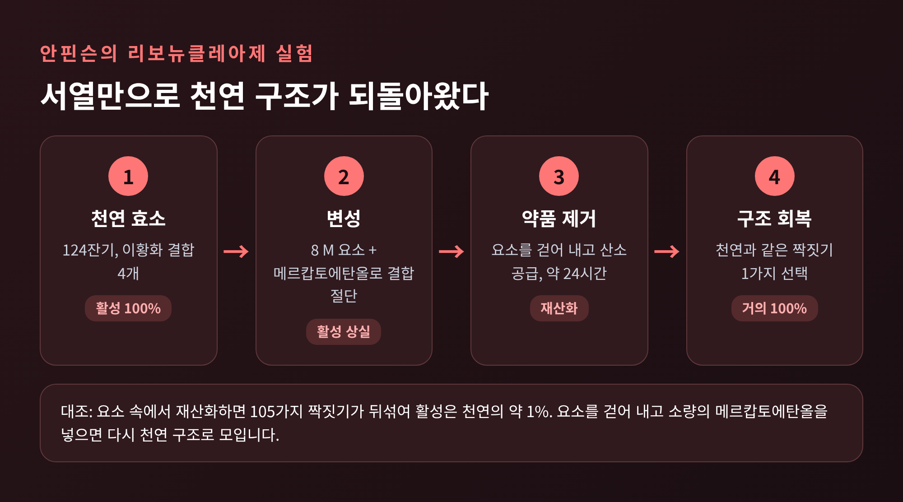
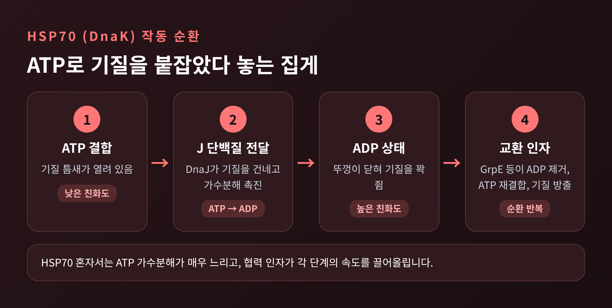
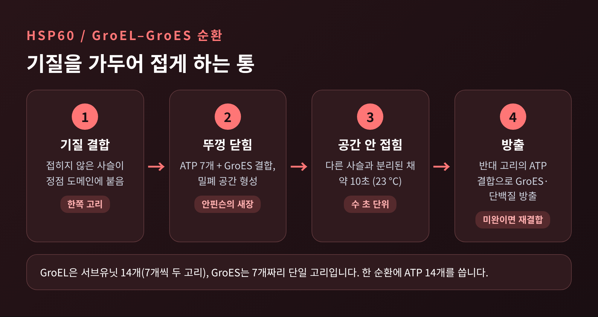
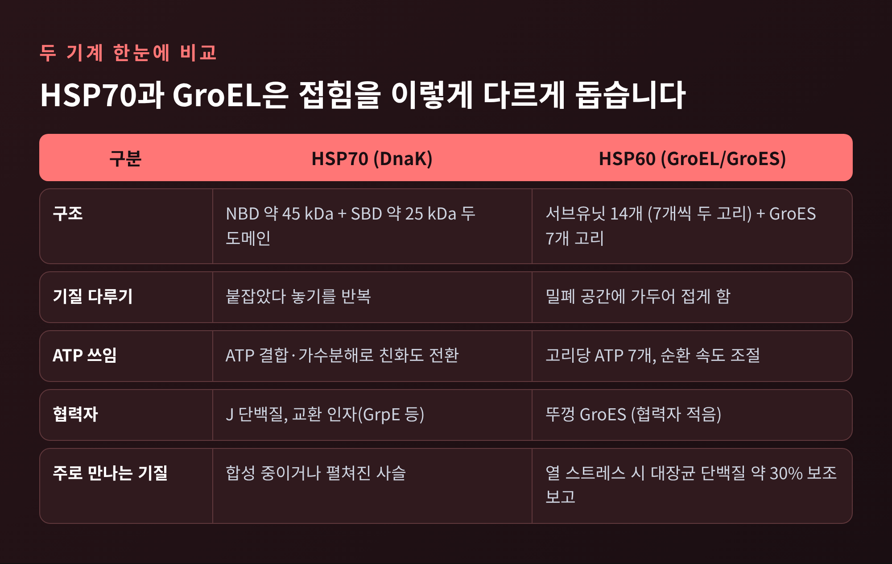
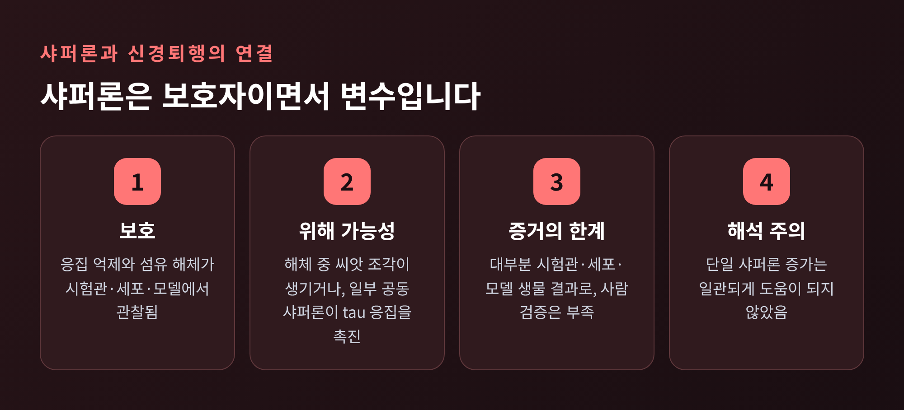

분자 샤퍼론과 단백질 접힘 — 세포는 어떻게 엉킴을 막을까

이번 글에서는 분자 샤퍼론이 단백질 접힘을 어떻게 돕는지 정리해 보겠습니다. 안핀슨의 가설에서 출발해 HSP70과 HSP60(GroEL)의 작동 순환을 살피고, 잘못 접힌 단백질이 신경퇴행성 질환과 어떻게 이어지는지까지 다룹니다.
세 줄 요약
- 단백질의 최종 구조는 아미노산 서열에 담겨 있고, 샤퍼론은 그 구조를 새로 지시하지 않고 접히는 과정의 사고를 막아 줍니다.
- HSP70은 ATP를 쓰며 기질을 붙잡았다 놓는 '개폐식 집게', GroEL은 기질을 가두어 접게 하는 '통'입니다.
- 샤퍼론은 응집을 막기도 하지만 상황에 따라 병리를 키울 수도 있어, 치료 효능을 단정하기는 어렵습니다.
■ 안핀슨의 실험: 접힘의 정보는 서열 안에 있다
1950년대 중반, 크리스천 안핀슨은 소 췌장에서 얻은 리보뉴클레아제라는 효소를 실험 재료로 삼았습니다. 이 효소는 아미노산 124개로 이루어져 있고, 시스테인 8개가 짝을 이룬 이황화 결합 4개로 구조를 붙잡고 있습니다.
8 M 요소와 메르캅토에탄올로 이 결합을 끊으면 효소는 풀어헤쳐지고 활성을 잃습니다. 약품을 제거하고 산소를 공급하자 효소는 거의 100%에 가까운 활성을 되찾았습니다. 한 해설 글에 따르면 약 24시간이 걸렸습니다.
여기서 눈여겨볼 대목이 있습니다. 8개의 SH기가 4개의 결합을 만드는 방법은 105가지입니다. 그런데 천연 효소에서는 그중 단 하나의 짝짓기만 나타납니다.
대조 실험도 있었습니다. 요소가 남아 있는 상태에서 다시 산화시키면 105가지가 뒤섞인 혼합물이 되었고, 활성은 천연의 약 1%에 그쳤습니다. 요소를 걷어 내고 메르캅토에탄올을 소량 넣어 결합이 서로 자리를 바꾸게 하자, 혼합물은 천연과 구별되지 않는 하나의 산물로 모였습니다.

이 결과에서 나온 것이 열역학적 가설입니다. 천연 구조는 시스템의 깁스 자유에너지가 가장 낮은 구조이며, 원자 간 상호작용의 총합, 곧 서열과 환경이 그 구조를 정한다는 내용입니다. 안핀슨은 이 연구로 1972년 노벨 화학상을 받았습니다.
다만 이 가설이 곧 "시험관에서처럼 세포 안에서도 저절로 잘 접힌다"는 뜻은 아닙니다. 뒤에서 살펴보겠지만, 세포 안에서는 사정이 다릅니다.
■ 레빈탈의 역설과 샤퍼론이 필요한 이유
1968년 레빈탈은 이런 계산을 제시했습니다. 잔기 100개짜리 단백질에서 잔기마다 3가지 배치가 가능하다면 가능한 구조는 3의 100제곱 가지입니다. 초당 10의 13제곱 개씩 탐색해도 약 10의 27제곱 년이 걸린다는 것입니다. 실제 단백질은 수 초에서 수 분이면 접힙니다. (한 해설 글에 소개된 계산입니다.)
접힘이 무작위 탐색이 아니라는 점은 분명해졌습니다. 그러나 세포 안의 단백질은 또 다른 문제를 안고 있습니다. 접히는 도중의 사슬은 소수성 부위를 바깥에 드러내고 있어서, 이웃한 사슬과 달라붙어 응집하거나 분해 대상이 되기 쉽습니다.
샤퍼론은 바로 이 지점에서 일합니다. 연구자들은 샤퍼론의 작용이 천연 구조 자체를 바꾸지 않는다고 설명합니다. 천연 상태의 정보는 여전히 서열에만 있고, 샤퍼론은 새로 만든 단백질이 올바른 경로를 따르도록 거들 뿐입니다. 잘못 접힌 단백질이 GroEL에 붙으면 되돌릴 수 없는 응집체가 만들어지는 것을 막을 수 있습니다.
이름의 출발점은 1962년의 관찰입니다. 페루초는 초파리 침샘 염색체가 고온이나 대사 억제제에 노출되면 '퍼프'라는 부푼 자리를 만든다고 보고했습니다. 이후 이 자리가 Hsp70, Hsp90, Hsp60 같은 열충격단백질 유전자가 활발히 전사되는 곳임이 밝혀졌고, 세포가 단백질 항상성의 교란에 반응한다는 첫 증거로 평가됩니다.
그리고 1992년 랑어 등은 대장균에서 순차 경로를 제안했습니다. DnaK(HSP70)가 접히는 중인 펼쳐진 사슬에 먼저 붙고, DnaJ와 함께 구조가 덜 갖춰진 중간체를 안정화한 뒤, GrpE와 ATP 가수분해를 거쳐 GroEL(HSP60)로 넘긴다는 것입니다. 두 기계는 경쟁자가 아니라 이어달리기 주자인 셈입니다.
■ HSP70: ATP로 기질을 붙잡았다 놓아 주는 집게
HSP70은 두 도메인으로 이루어집니다. ATP를 결합하고 가수분해하는 뉴클레오타이드 결합 도메인(약 45 kDa)과, 기질을 붙잡는 기질 결합 도메인(약 25 kDa)입니다. 두 도메인은 서로 신호를 주고받으며 움직입니다. (NBD 크기는 약 40 kDa으로 적은 리뷰도 있어, 대략의 규모로 읽으시면 됩니다.)
HSP70이 알아보는 것은 소수성 잔기가 5개 안팎 모인 짧은 구간입니다. 접힌 단백질에서는 이 구간이 대개 안쪽에 묻혀 있습니다. 그래서 HSP70은 아직 접히지 않은 사슬, 특히 막 합성되는 사슬에 주로 작용합니다.
작동 순환은 네 단계로 정리됩니다.
- ATP가 붙은 상태에서는 기질 틈새가 열려 있습니다. 친화도가 낮아 기질이 쉽게 들어오고 쉽게 나갑니다.
- J 단백질(DnaJ, Hsp40)이 접히지 않은 기질을 붙잡아 HSP70에 전달하고, ATP 가수분해를 촉진합니다.
- ATP가 ADP로 바뀌면 뚜껑(LID)이 닫혀 기질을 꽉 쥡니다. 친화도는 수십 배에서 100배 가까이 높아집니다. (측정 조건에 따라 10~50배, 약 100배로 보고됩니다.)
- 뉴클레오타이드 교환 인자(세균의 GrpE, 진핵의 BAG 단백질·Hsp110 등)가 ADP를 내보내고 ATP가 다시 붙으면 틈새가 열려 기질이 풀려납니다. 기질은 접히거나, 다시 붙잡히거나, 다른 샤퍼론에 넘어갑니다.

이 순환의 속도를 정하는 것은 ATP 가수분해 자체가 아닙니다. HSP70 혼자서는 ATP 가수분해가 매우 느립니다. 세균의 Hsp40은 이를 약 15,000배까지 높이고, GrpE는 ADP를 ATP로 바꾸는 교환을 약 5,000배 빠르게 합니다. 생리적 ATP 농도에서는 뉴클레오타이드 교환이 기질 방출의 속도를 정한다는 해석도 있습니다.
여기에 협력자의 다양성이 더해집니다. 인간의 J 단백질은 소스에 따라 41개에서 47개, 약 50개까지 집계됩니다. 이처럼 수십 종의 협력자가 있기에 HSP70 하나가 접힘, 재접힘, 이동, 분해 연결, 응집체 해체 같은 여러 일을 나누어 맡을 수 있습니다.
■ HSP60/GroEL: 기질을 가두어 접게 하는 통
GroEL은 서브유닛 14개로 이루어진 원통입니다. 7개짜리 고리 두 개가 포개져 있고, 뚜껑 역할을 하는 GroES는 7개짜리 고리 하나입니다. 서브유닛 하나는 약 57~60 kDa이며, 표기는 문헌마다 조금 다릅니다. 한 해설에 따르면 GroEL의 높이는 약 145 Å, 중앙 통로의 지름은 약 45 Å입니다.
각 서브유닛은 ATP가 들어가는 적도 도메인, 경첩 역할의 중간 도메인, 기질과 GroES가 붙는 정점 도메인으로 나뉩니다.
순환은 다음과 같이 이어집니다.
- 접히지 않은 기질이 한쪽 고리의 정점 도메인에 붙습니다.
- 그 고리에 ATP 7개와 GroES가 결합하면 정점 도메인이 들려 올라가 밀폐된 공간이 생깁니다. 이 공간을 '안핀슨의 새장'이라 부르기도 합니다. 기질은 다른 사슬과 떨어진 채 이 안에서 접힐 기회를 얻습니다.
- 23 °C의 실험에서 기질은 밀폐실에 들어간 뒤 약 10초 머물고 GroES가 풀려납니다. 한 바퀴는 수 초 단위로 도는 셈입니다.
- 반대편 고리에 ATP가 결합하면 GroES와 접힌 단백질이 방출됩니다. 덜 접혔다면 다시 붙어 한 번 더 돕니다.

수치와 쟁점도 짚어 두겠습니다. 정상 조건에서 대장균 단백질의 약 5~10%가 샤페로닌의 도움을 받고, 열 스트레스를 받으면 약 30%로 늘어난다는 보고가 있습니다. 시험관 추출물에서 GroEL이 결합하는 비율이 약 40%로 더 높게 나온 연구도 있습니다. 측정 방식이 달라 숫자가 다릅니다.
작동 원리를 두고도 의견이 갈립니다. 1996년 하이어-하틀 등은 ATP 가수분해 없이도 GroES의 결합과 해리만으로 접힘이 일어남을 보였고, ATP는 주로 순환의 속도를 맞춘다고 해석했습니다. 또 82 kDa 아코니테이스는 뚜껑 밑에 들어가기엔 너무 큰데도 GroEL의 도움을 받아 재접힘합니다. 그래서 모든 기질이 공간 안에서만 접히는지는 아직 논쟁 중입니다.

■ 샤퍼론이 무너질 때: 응집과 신경퇴행성 질환
샤퍼론은 세포의 단백질 품질관리 체계의 일부입니다. 이 체계는 샤퍼론 외에 유비퀴틴-프로테아솜과 자가포식으로 이루어집니다. 신경세포는 수명이 길고 에너지 소비가 커서 이 체계의 실패에 특히 취약하다고 알려져 있습니다. 게다가 신경세포는 분열하지 않아, 쌓인 응집체를 세포분열로 희석할 수도 없습니다.
응집하기 쉬운 단백질과 질환의 짝은 다음과 같이 정리됩니다.
- tau와 β-아밀로이드: 알츠하이머병
- α-시누클레인: 파킨슨병
- TDP-43, FUS: 근위축성 측삭경화증(ALS)과 전두측두엽 치매
- 폴리글루타민 단백질: 헌팅턴병 등 (글루타민 반복 40개 이상에서 발병한다고 서술됩니다.)
- 프리온 단백질: 크로이츠펠트-야콥병
아밀로이드 침착은 약 50가지 인간 질환과 연관됩니다. 나이가 들면 샤퍼론의 양과 활성, 프로테아솜과 자가포식의 효율이 떨어지고 산화 스트레스는 늘어난다는 것이 한 리뷰의 정리입니다.
실험실에서 관찰된 샤퍼론의 보호 효과는 구체적입니다. Hsp70과 Hsp90은 α-시누클레인의 같은 N 말단 부위를 인식해 올리고머화를 막았습니다. Hsp70과 Hsp40는 세포 모델에서 헌팅틴 응집을 억제했고, 한 세포 배양 실험에서는 Hsp70 상향이 세포 밖 α-시누클레인 올리고머를 84% 줄였습니다. 소형 열충격단백질은 접히지 못한 단백질에 붙어 응집이 더 진행되지 않게 잡아 두는 역할로 서술됩니다.

그러나 같은 샤퍼론이 양날의 검이라는 점을 빼놓을 수 없습니다. 탈응집 과정에서 병리를 퍼뜨리는 씨앗이 될 작은 조각이 풀려날 수 있다는 보고가 있습니다. 예쁜꼬마선충에서는 Hsp70의 탈응집이 오히려 아밀로이드 부하와 독성 종을 늘렸습니다. 알츠하이머 환자의 뇌에서 증가한 FKBP51은 Hsp90과 함께 tau 응집을 촉진한다고 보고됩니다. 프리온에서도 증거가 엇갈립니다. HSF1이 없는 쥐는 약 20% 더 빨리 사망했지만, Hsp70 과발현은 생존을 바꾸지 못했습니다.
그래서 샤퍼론을 약으로 쓰겠다는 구상은 아직 신중하게 읽어야 합니다. 단일 샤퍼론을 늘린다고 일관되게 좋아지지 않았고, HSPB1 과발현은 ALS 쥐 모델에서 운동 증상을 늦췄지만 생존을 늘리지는 못했습니다. 거의 모든 Hsp90 억제제는 생체 내에서 광범위한 독성을 보였다는 보고도 있습니다. 재조합 Hsp70을 코로 투여해 쥐의 기억을 보호했다는 연구 역시 실험 모델의 결과일 뿐, 사람에게서 확인된 것이 아닙니다.
■ 정리: 접힘은 저절로, 그러나 혼자서는 아닙니다
정리하면 이렇습니다. 예전엔 접힘을 '서열이 정하고 단백질이 알아서 완성하는 일'로 이해했다면, 지금은 '서열이 정하되 세포의 협력 체계가 사고를 막아 주는 일'로 이해합니다. 안핀슨의 가설은 틀린 것이 아니라, 세포라는 붐비는 환경에서 보강되었습니다.
HSP70은 ATP로 기질을 붙잡고 놓는 반복으로, GroEL은 기질을 가두는 공간으로 같은 목표에 다가갑니다. 두 기계 모두 구조의 설계도를 쓰지 않고, 접히는 동안의 위험을 관리합니다.
샤퍼론은 접힘을 지시하지 않고, 접힘이 무사히 끝나도록 지킵니다.
다만 질환과의 연결은 아직 풀리지 않은 부분이 많습니다. 샤퍼론이 부족해서 병이 생기는지, 병이 진행되며 샤퍼론이 소진되는지, 보호와 위해 중 어느 쪽이 우세한지는 질환과 단백질마다 다릅니다. 이 글의 수치 중 상당수가 시험관과 모델 생물에서 나왔다는 점도 기억해 두시길 권합니다.
다음에 단백질이 '저절로' 접힌다는 문장을 만나신다면, 그 곁에서 쉬지 않고 일하는 집게와 통을 떠올려 보시면 좋겠습니다.
이 글은 일반 정보를 정리한 것이며, 의학적 진단이나 치료를 대신하지 않습니다.
참고 문헌
- Anfinsen CB, Nobel Lecture 1972 (https://mozart.bioinfo.rpi.edu/bystrc/courses/biol4550/Anfinsen_1972.pdf)
- Mayer MP, Kityk R. Front Mol Biosci 2015 (https://pmc.ncbi.nlm.nih.gov/articles/PMC4611139)
- Karunanayake C, Page RC. Exp Biol Med 2021 (https://pmc.ncbi.nlm.nih.gov/articles/PMC8243209)
- Marchenkov VV, Semisotnov GV. Int J Mol Sci 2009 (https://www.mdpi.com/1422-0067/10/5/2066)
- Stan G, Lorimer GH, Thirumalai D. arXiv (https://arxiv.org/pdf/2211.08623)
- Hervás R, Oroz J. Int J Mol Sci 2020 (https://pmc.ncbi.nlm.nih.gov/articles/PMC7730194)
- Lindberg I et al. J Neurosci 2015 (https://pmc.ncbi.nlm.nih.gov/articles/PMC4604223)
- Ben Khalaf N. Front Aging Neurosci 2026 (https://www.frontiersin.org/articles/10.3389/fnagi.2026.1711422)
- 그 밖의 소스는 같은 폴더의 research.md 참고